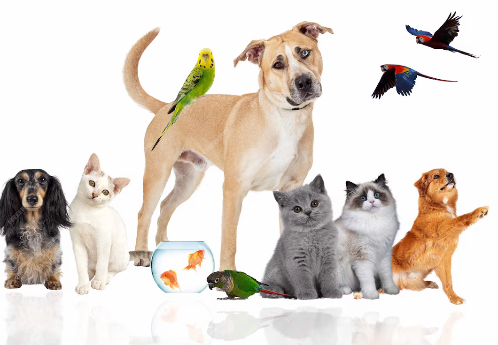

Welcome to our adoption centre
We rehome pets in Ireland. Please find information below about what to expect during the rehoming process.
Pet Adoption Process
- Our rehoming center is open on Friday, Saturday, Sunday and Monday from 1-3pm. Outside these hours, we operate on appointment-only basis for potential adopters.
- Make Plans - If you are hoping to welcome a pet into your life, please plan ahead and ensure that it will fit into your lifestyle long term.
- Pre-Adoption Talk - You can attend our pre-adopting talk online from the comfort and safety of your home. You'll get a chance to ask questions of our team members and find out more about how we can help your new pet settle in.
- First Date - Depending on your new pet's needs, we'll sometimes arrange for you to meet them before they come home and get to know them a little better. You may need to meet them multiple times before they join you home.
- Happy Life - Get advice and support from our team.
Get in touch with us today:
| Branch | Contact Name | Phone Number |
|---|---|---|
| Dublin | Charles | 0870339445 |
| Galway | Daniel | 08935306020 |
| Carlow | Kenneth | 0899413132 |